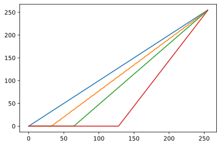

Q52：セピア化
グレースケール化したときに，白は白になり，黒はセピア色になる処理.
Code
0.1 Q53：CSSでのセピア化
Code
fig = plt.figure(figsize = (16, 16))
sepia_rate = [.25, .5, .75, 1.]
with Image.open("numpy_book/imgs/flower01.jpg") as img:
flower = np.array(img)
for i, alpha in enumerate(sepia_rate, start = 1):
sepia = generate_sepia(alpha)
img = np.clip(np.dot(flower, sepia.T), 0, 255).astype(np.uint8)
ax = fig.add_subplot(2, 2, i)
ax.imshow(img, vmin = 0, vmax = 255)0.2 Q54：トーンカーブ
\[ y = \frac{128}{128-a}(x-a) \]
(960, 1280, 3)0.3 Q55：トーンカーブ（ガンマ補正）
Code
0.4 Q56:トーンカーブ（S字曲線）
Code
0.5 Q57:チャンネル別のカーブ
Code

array([[181, 178, 177, ..., 189, 191, 192],
[179, 177, 177, ..., 191, 192, 192],
[178, 179, 179, ..., 192, 193, 194],
...,
[ 59, 56, 56, ..., 102, 103, 104],
[ 58, 57, 58, ..., 102, 102, 102],
[ 53, 55, 56, ..., 102, 101, 102]], dtype=uint8)array([[106, 100, 98, ..., 122, 126, 128],
[102, 98, 98, ..., 126, 128, 128],
[100, 102, 102, ..., 128, 130, 132],
...,
[ 0, 0, 0, ..., 0, 0, 0],
[ 0, 0, 0, ..., 0, 0, 0],
[ 0, 0, 0, ..., 0, 0, 0]], dtype=uint8)0.6 Q58：色合わせていく世界
Code
(700, 1050, 3)0.7 Q59：暗くなっていく世界，明るくなっていく世界
Code
fig = plt.figure(figsize=(12,12))
a_seq = [0, 32, 64, 128]
for i, a in enumerate(a_seq, start = 1):
img_up = pic_hsv.copy()
img_up[..., 2] = up_tone(img_up[...,2], a)
img_down = pic_hsv.copy()
img_down[..., 2] = down_tone(img_down[..., 2], a)
img = np.concatenate([img_up, img_down], axis = 1)
ax = fig.add_subplot(4, 1, i)
ax.imshow(Image.fromarray(img, "HSV"))
0.8 Q60：レイヤーマスク
Code
(960, 1280, 3)Code
H, W, c = flower.shape
idy, idx = np.indices((H, W))
mask1 = -0.75 * idx + 800 <= idy
mask2 = -0.75 * idx + 1200 >= idy
mask = np.logical_and(mask1, mask2)
gradation_line = np.linspace(0, 255, W).astype(np.uint8)
gradation = np.tile(gradation_line, (H, 1))
flower[mask, 0] = gradation[mask]
plt.imshow(Image.fromarray(flower, "HSV"))0.9 Q61:レイヤーマスク
Code
with Image.open("numpy_book/imgs/pic01.jpg") as img:
pic_hsv = np.array(img.convert("HSV"))
H, W, c = pic_hsv.shape
print(H, W)
print(pic_hsv[0])
v = 255 / 127 * (pic_hsv[..., 2].astype(float) - 128)
idy, idx = np.indices((H, W))
m = 255 * (1 - .75 / H * np.sqrt(idy * idy + (idx - W) ** 2))
v = np.clip(v + m, 0, 255).astype(np.uint8)
pic_hsv[..., 2] = v
plt.imshow(Image.fromarray(pic_hsv, "HSV"))700 1050
[[156 14 224]
[134 13 221]
[ 98 14 226]
...
[134 14 232]
[134 14 233]
[134 14 233]]0.10 Q62：レイヤーマスク
Code
with Image.open("numpy_book/imgs/flower01.jpg") as img:
back = np.array(img.convert("HSV"))
grad = np.full_like(back, 255)
grad[..., 0] = np.linspace(0, 255, back.shape[1])[None, :].astype(np.uint8)
print(back.shape)
with Image.open("numpy_book/imgs/heart01.png") as img:
heat = np.array(img)
print(heat.shape)
mask = heat[..., 3] > 0
back[mask, :] = grad[mask, :]
plt.imshow(Image.fromarray(back, "HSV"))
(960, 1280, 3)
(960, 1280, 4)0.11 Q63：レイヤーの合成
ここからは, 要素の値域が0-1として扱う.
array([[[0.58039216, 0.70980392, 0.76862745],
[0.57647059, 0.69803922, 0.76862745],
[0.58039216, 0.69411765, 0.76470588],
...,
[0.67058824, 0.74117647, 0.82745098],
[0.66666667, 0.74901961, 0.83137255],
[0.66666667, 0.75294118, 0.83529412]],
[[0.57254902, 0.70196078, 0.76862745],
[0.57254902, 0.69411765, 0.76470588],
[0.58039216, 0.69411765, 0.76470588],
...,
[0.66666667, 0.74901961, 0.83137255],
[0.66666667, 0.75294118, 0.83529412],
[0.66666667, 0.75294118, 0.83529412]],
[[0.57647059, 0.69803922, 0.76862745],
[0.58823529, 0.70196078, 0.77254902],
[0.59607843, 0.70196078, 0.77647059],
...,
[0.67058824, 0.75294118, 0.82745098],
[0.66666667, 0.75686275, 0.82745098],
[0.67058824, 0.76078431, 0.83137255]]])0.12 Q64：レイヤーの合成モード
0.13 Q65：スクリーンによる光の描画
Code
Code

0.14 Q66：例あーの合成モード
明るくなる合成モード.
- スクリーン
- 覆い焼き（リニア加算）
0.15 Q67：レイヤーの合成
覆い焼きカラー．割り算のエラーになるので，適当なイプシロンをくえて置くこと.
0.16 Q68：覆い焼き二種類の比較
0.17 Q69：レイヤーの合成モード
比較は要素ごとに値の大きい方を採用する.
カラー比較の場合にはRGB値の合計を比較する.
0.18 Q70：焼き込みリニア
暗くなっていく合成である．
白黒反転してから，リニアで合成.
0.19 Q71：レイヤーの合成モード
焼き込みカラー. 覆い焼きカラーとは異なり暗くなる.
\[ O = 1 - \frac{1-B}{R + \epsilon} \]
0.20 Q72：レイヤーの合成モード（比較（暗），カラー比較（暗））
0.21 Q73：焼き込み２種類比較
覆い焼きカラーと，焼き込みを比較する.
Code
Code

0.22 Q74：レイヤーの合成モード
オーバーレイ.
0.23 Q75：レイヤーの合成モード（ハードライト)
0.24 Q76：オーバーレイを使ったコントラスト補正
同一画像でオーバーレイを行うとコントラストの強調が行える.
Code

0.25 Q77：ゲーミングあんこちゃん
Code
Code
Code
0.26 Q78：レイヤー合成モード（ソフトライト）
0.27 Q81：ソフトライトを再帰的にかける
0.28 Q81：禍々しい♥
リニアーライトで合成.
0.29 Q83：ライトシリーズ比較
Code
def hardlight(img1, img2):
lay1 = 2 * img1 * img2
lay2 = 1 - 2 * (1 - img1) * (1 - img2)
mask = img2 < .5
out = mask * lay1 + (1-mask) * lay2
out = np.clip(out, 0, 1)
return out
def softlight (img1, img2):
lay1 = 2 * img1 * img2 + img1 * img1 * (1 - 2 * img2)
lay2 = 2 * img1 * (1 - img2) + np.sqrt(img1) * (2 * img2 - 1)
mask = img2 < .5
out = mask * lay1 + (1 - mask) * lay2
out = np.clip(out, 0, 1)
return out
def linearlight(img1, img2):
layer1 = img1 + 2 * img2 - 1
layer2 = img1 + 2 * (img2 - .5)
mask = img2 < .5
out = mask * layer1 + (1-mask) * layer2
out = np.clip(out, 0, 1)
return out
def vividlight(img1, img2):
epsilon = 1e-8
layer1 = 1 - (1 - img1) / (2 * img2 + epsilon)
layer2 = img1 / (1 - 2 * (img2 - .5) + epsilon)
mask = img2 < .5
out = mask * layer1 + (1-mask) * layer2
out = np.clip(out, 0, 1)
return out